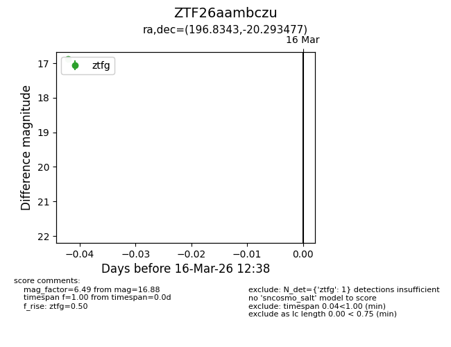
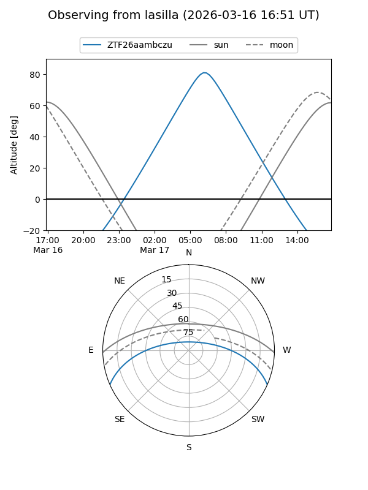
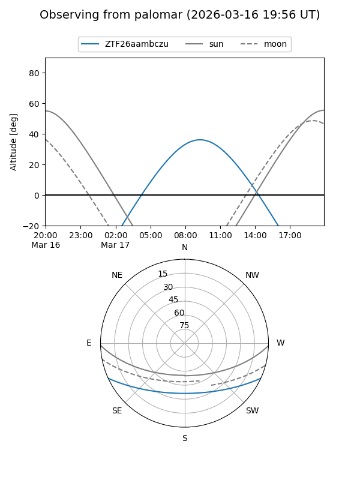

ZTF26aambczu
Target ZTF26aambczu at 2026-03-16 12:40
Aliases and brokers:
FINK: link
Lasair: link
ALeRCE: link
alt names
ZTF26aambczu (ztf,fink_ztf)
Coordinates:
equatorial (ra, dec) = 196.8343,-20.29348
equatorial (HMS+DMS) = 13:07:20.24,-20:17:36.52
galactic (l, b) = (307.9848,+42.42223)
Flags:
Photometry:
last ztfg=16.88
1 ztfg detections
Lightcurve

Visibility


Additional plots